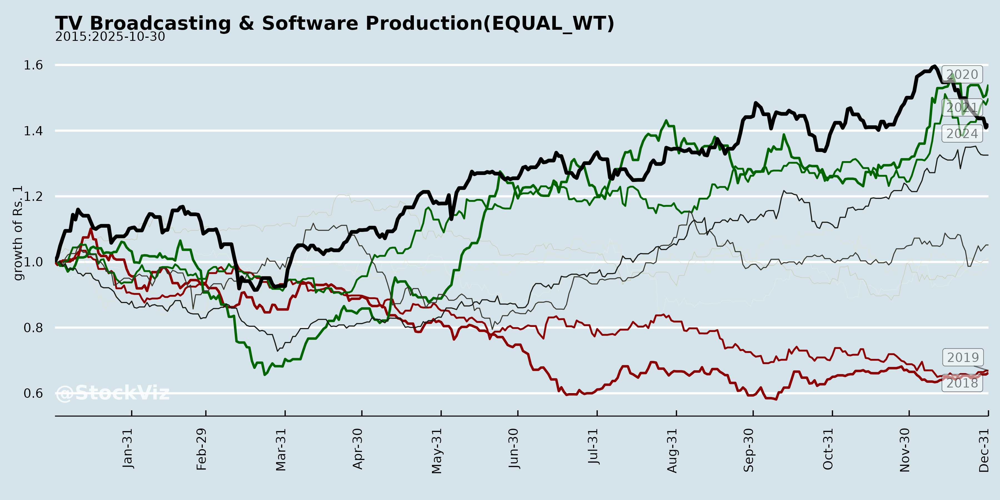
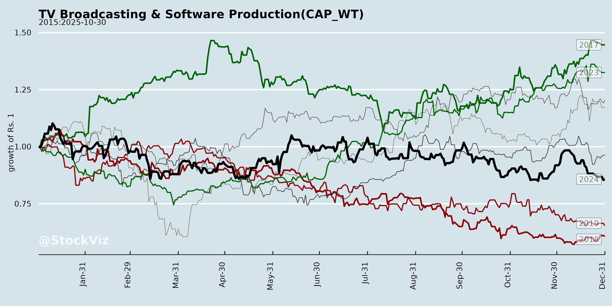
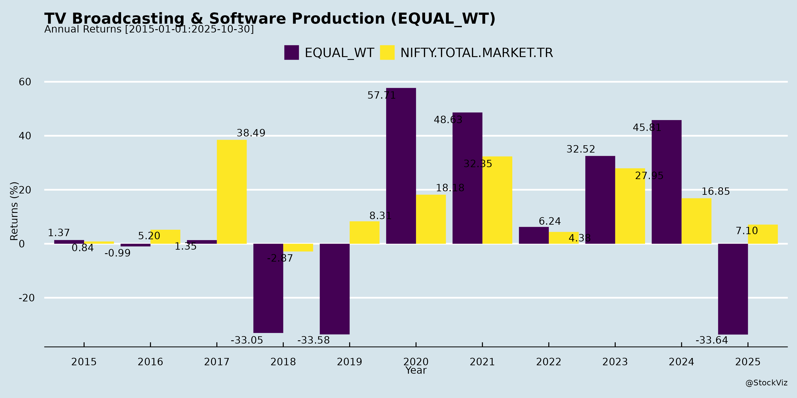
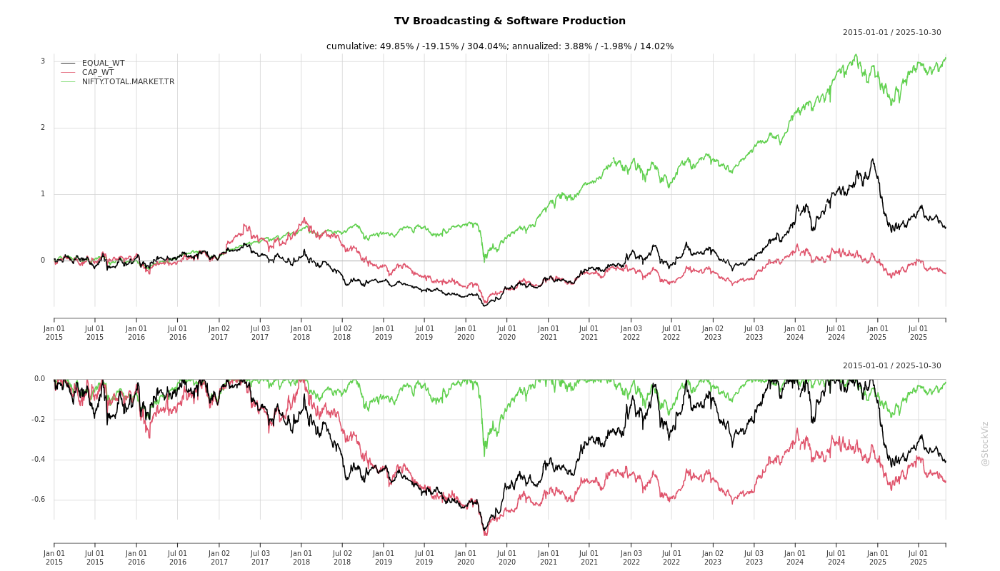
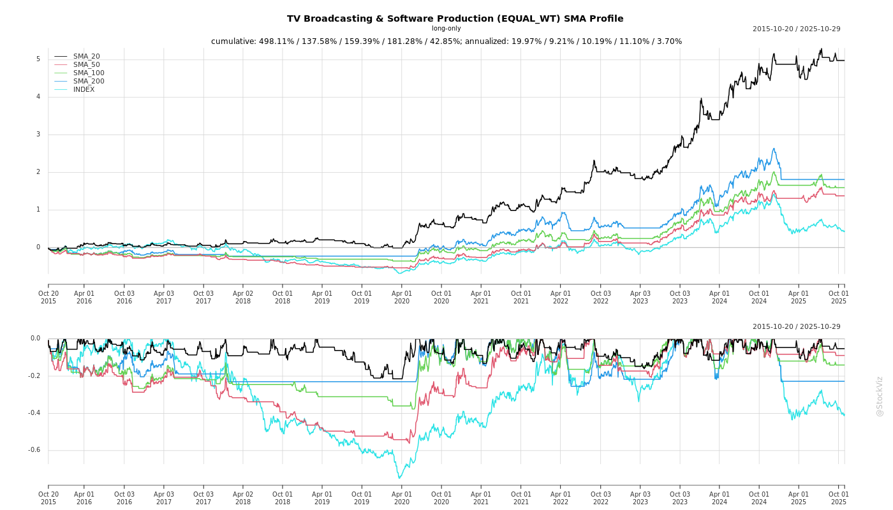
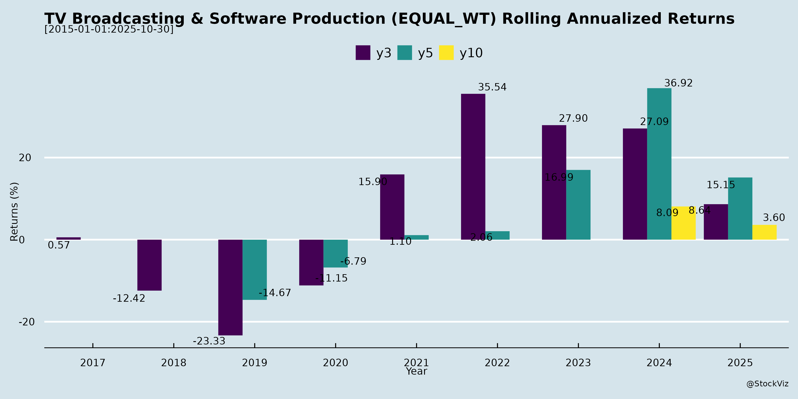

TV Broadcasting & Software Production
Industry Metrics
February 20, 2026
Annual Returns



Cumulative Returns and Drawdowns

SMA Scenarios


Current Distance from SMA
Rolling Returns

Market Cap
EBIT (% of Industry Total)
Revenue (% of Industry Total)
AI Summaries
Analyst
asof: 2025-11-30
Indian TV Broadcasting & Software Production Sector Analysis
Based on provided documents (ZEEL investor meeting intimation and GTPL Hathway Q2/H1 FY26 earnings transcript), the analysis focuses on the broadcasting-distribution ecosystem. ZEEL’s routine disclosure signals ongoing investor engagement amid stable operations, while GTPL’s results highlight MSO dynamics influencing broadcasters like ZEEL via content distribution, ARPU pressures, and settlements.
Headwinds
- Subscriber Churn & Seasonality: Q2 FY26 saw ~100k sub loss (9.6M to 9.5M total; 8.8M paying), driven by excessive rains hampering sales/retention and absence of major events (e.g., post-IPL lull until Asia Cup). Industry-wide issue, leading to ~INR10cr YoY subscription revenue dip (INR302cr).
- Intense Competition: Broadband growth muted (1.05M subs, flat QoQ despite +17% data usage to 410GB); pressure from Jio/Airtel (deep pockets), Air Fiber (euphoria stabilizing but slowed additions), and potential satellite broadband (high equipment costs untested in India). Cable TV faces DTH, Free Dish, and smaller MSOs.
- Revenue & Margin Pressures: Standalone subscription revenue down 1% YoY/3% QoQ; net pay channel costs flat but gross receivables/payables ballooned ~INR400-460cr mid-year due to broadcaster settlements (S-curve normalizes by Mar).
- Price Sensitivity: ARPU modest (cable INR200-450; broadband INR465, +INR5 YoY); Tier 1 higher uptake (HD 30-35%) vs. Tier 2/3 (10-12%), limiting upsell.
Tailwinds
- Operational Resilience: Consolidated revenue +12% YoY (INR9,649M); standalone +17% YoY (INR6,402M). Operating EBITDA margin steady at 22%; healthy balance sheet (net debt/equity 0.2x; H1 op. cash flow INR1,291M).
- ARPU & Usage Growth: Broadband ARPU +1% YoY; data consumption +17%. Bundling (cable + broadband + OTT/gaming) aids retention/upsell.
- Infrastructure Leadership: GTPL (India’s largest MSO) at 9.5M cable subs, 48k+ partners; 75% homepass (5.95M) FTTX-ready. Proved FTTH superiority over wireless for consistency.
- Investor Engagement: ZEEL’s physical investor meets (Avendus, CLSA, JM Financial) indicate proactive outreach, no UPSI shared.
Growth Prospects
- Tech & Expansion: HITS platform launch Q3 FY26 for pan-India reach (100% coverage vs. current limits), delivery cost savings, faster rollout. Organic/inorganic MSO consolidation; B2B broadband (100+ clients, accelerating).
- Market Opportunity: 350M households (220M TV; 44M wired broadband → 100M in 5yrs). Win-back from DTH/Free Dish/rural via aggressive schemes; cable-dark/hilly areas untapped. Bundled OTT competitive pricing for acquisition/retention.
- Financial Outlook: 8-11% revenue CAGR; Q3/Q4 recovery expected (events like India tours, post-rain boost). FY26 capex INR350-400cr (H1 INR153cr: STB/CPE/HITS focus).
- Ecosystem Synergies: MSO growth (GTPL) supports broadcasters (ZEEL) via higher distribution, marketing incentives (+20-25% YoY norm).
Key Risks
- Competition Escalation: Wireless (Air Fiber stabilizing but persistent) + satellite entry; DTH/Free Dish in rural. Potential sub erosion if wired uptake lags.
- Working Capital Volatility: Mid-year receivable/payable spikes (broadcaster deals); historical taper but could strain liquidity.
- Execution/External Factors: Weather/event dependency; capex overrun (HITS rollout details pending); regulatory (BharatNet litigation/tenders—bidding active but undisclosed).
- Macro Sensitivity: Price-conscious India limits ARPU hikes; flat profitability (EBITDA ~INR110cr, -INR3cr YoY) despite revenue growth amid rising costs.
- Disclosure Gaps: Limited ZEEL insights; GTPL B2B broadband slowdown despite focus.
Overall Summary: Sector faces near-term churn/competition headwinds but buoyed by broadband tailwinds, HITS-driven expansion, and vast untapped TV/broadband market. Growth hinges on Q3 HITS execution and event-led recovery; risks center on wireless disruption and seasonality. Positive for integrated players leveraging bundling/distribution scale.
Financial
asof: 2025-12-01
Analysis of Indian TV Broadcasting & Software Production Sector
Based on the Q3 FY25 (ended Dec 31, 2024) and partial FY25 financial results from key players (Sun TV, Zee Entertainment, Hathway, DEN Networks, NDTV, TV Today, Dish TV, Zee Media, Raj TV, TV Vision), the sector shows resilience in subscriptions but faces ad revenue pressure, high costs, and structural shifts. Summary below:
Headwinds (Challenges dragging performance)
- Declining Ad Revenues: Core issue across most firms (e.g., Sun TV ads at ₹332 Cr vs. ₹355 Cr YoY; NDTV/TV Vision/Zee Media report sharp drops). Blamed on weak market sentiment, IPL/cricket disruptions (TV Today radio losses), and digital migration.
- High Operating Costs: Content/production (NDTV ₹13K+ Cr YoY), employee expenses (Zee Media ₹16K Cr), depreciation (Dish TV impairments ₹40K+ Cr prior FY), and finance costs (Dish TV ₹6.5K Cr quarterly) erode margins. Cumulative losses: Zee Media ₹8K Cr 9M, TV Vision ₹10K Cr FY.
- Regulatory/License Pressures: Dish TV faces ₹3,200 Cr MIB license fee demand (sub-judice); TV Vision NPAs/loan recalls; multiple firms note MIB approvals pending.
- Impairments & Asset Writedowns: TV Vision (₹2,700 Cr intangibles), Dish TV (₹766 Cr investments), Hathway (JVs), signaling overvalued legacy assets amid subscriber churn.
Tailwinds (Positive supports)
- Stable Subscription Growth: Sun TV up 2% (₹435 Cr); Hathway broadband/cable steady (₹1,500 Cr 9M); DEN Networks ₹2,600 Cr quarterly. Shift to ARPU-linked models aids resilience.
- Diversification Income: Sun TV cricket franchises (₹497 Cr 9M), other income (investments: Sun TV ₹458 Cr); Hathway securities trading (₹48 Cr).
- Cost Rationalization: Zee Media/TV Today note reductions; TV Today radio pivot to sale.
- Dividends/Cash Reserves: Sun TV declares ₹2.5/share (50%); strong balance sheets (Sun TV reserves ₹10K Cr).
Growth Prospects (Opportunities ahead)
- Digital/OTT/Broadband Expansion: Hathway/DEN focus (broadband ₹453 Cr 9M); Sun TV Sun NXT; mergers (Sun TV Phase III radio amalgamation).
- Fundraising & Restructuring: Zee Media warrants (₹500 Cr raised, ₹400 Cr planned); TV Today radio sale; Sun TV dividends signal confidence.
- Content Monetization: Cricket/IPL tailwinds (Sun TV positive); regional strength (Sun TV Tamil/Telugu).
- Outlook: FY26 recovery via ad rebound (post-election), tariff hikes, 5G/broadband synergies. Sun TV/Hathway profitable; sector EBITDA margins ~10-20% recoverable.
Key Risks (High-impact threats)
- Going Concern Doubts: TV Vision/Dish TV/Zee Media highlight losses, negative equity, NPA status, uncertainties (e.g., Dish TV negative net worth).
- Debt/Regulatory Overhang: Defaults (TV Vision ₹1,387 Cr interest unprovisioned), MIB disputes (₹600 Cr+ demands), court cases (writs/SLPs).
- Subscriber/Revenue Volatility: Ad slump (40-50% YoY drops), OTT competition eroding TV share; IPL seasonality.
- Impairment/Liquidity: Unprovisioned losses (TV Vision ₹2,700 Cr intangibles, ₹3,300 Cr investments); negative working capital (Zee Media).
- Execution: Fundraising delays, board vacancies (Dish TV), vendor disputes.
Overall Sector Snapshot: Mixed—leaders like Sun TV (PAT ₹365 Cr Q3) thrive on subs/diversification; laggards (TV Vision/Zee Media) bleed from legacy debt/content costs. Recovery hinges on digital pivot, ad cyclicality, and regulatory clarity. CAG/audit qualifications amplify risks for weaker players. Investors: Favor subs-heavy firms; monitor Q4/FY26 for fundraising success.
General
asof: 2025-12-03
Summary Analysis: Indian TV Broadcasting & Software Production Sector
Based on the provided SEBI disclosures from key players (Sun TV, ZEEL, Dish TV, NDTV, Zee Media, T.V. Today, Raj TV, TV Vision, etc.), the sector faces a transitional phase amid digital disruption. Traditional TV revenues are pressured, but diversification into OTT, smart devices, and startups offers upside. Below is a structured analysis of headwinds, tailwinds, growth prospects, and key risks.
Headwinds (Challenges Pressuring the Sector)
- Declining Revenues & Profitability: Dish TV reported Q2 FY26 operating revenues down 26.4% YoY to ₹2,911 Mn, subscription revenues down 16.5%, EBITDA down 78% to ₹318 Mn, and net loss widening to ₹1,327 Mn (vs. ₹374 Mn YoY). Attributed to churn, inflation, competition from mobile/broadband/free TV.
- Deal Terminations & Stagnation: T.V. Today Network’s FM radio sale and ad sales agreements with CCAMPL terminated, signaling execution risks in asset monetization.
- Regulatory & Compliance Burdens: Fines on Raj TV (₹2.77L each from BSE/NSE) for board composition non-compliance under Reg 17(1). Zee Media faces GST demand of ₹1.11 Cr + penalty/interest for FY20 ITC issues.
- Elevated Churn & Market Dynamics: Dish TV notes consistent subscriber additions but high churn aligned with industry trends.
Tailwinds (Supportive Factors)
- Digital & Hybrid Expansion: Dish TV’s Watcho OTT hits 98 Mn downloads/14 Mn paid subs; launch of VZY Smart TVs integrates DTH+OTT, targeting untapped households with affordable pricing.
- Strategic Investments: ZEEL’s ₹15 Cr investment in Ideabaaz Tech (20% stake) for media/entrepreneurship, focusing on Tier 2/3 startups via Show/Platform/Exhibition verticals.
- Branding & IP Refresh: Sun TV renames UK subsidiary to Sunrisers Leeds (sports-linked); NDTV rebrands ‘NDTV Alive’ to ‘NDTV Good Times’ for lifestyle pivot.
- Operational Continuity: Routine AGMs (GTPL Hathway), appointments (TV Vision CS), and notices (Sri Adhikari) indicate stable governance.
Growth Prospects
- OTT & Connected Devices Boom: Dish TV’s hybrid ecosystem (Watcho, FLIQS, VZY TVs) positions it for 360° entertainment; potential to capture smart home demand amid 24+ OTT apps integration.
- Diversification Beyond Linear TV: ZEEL’s startup focus and Dish TV’s shift to digital-first (creator monetization via FLIQS) tap Tier 2/3 markets and youth demographics.
- Content & Sports Leverage: Sports IPs (Sun TV cricket) and events like Content India 2026 could drive engagement/ad revenues.
- M&A/Investment Upside: Fresh capital infusions (e.g., ZEEL) and no major regulatory hurdles for deals signal room for consolidation.
Key Risks
| Risk Category | Details | Impacted Companies |
|---|---|---|
| Financial | Persistent losses, revenue erosion from digital shift/churn (e.g., Dish TV EBITDA margin at 10.9%). | Dish TV, sector-wide |
| Regulatory/Tax | GST demands (₹1.11 Cr on Zee Media), SEBI fines (Raj TV), potential appeals/penalties. | Zee Media, Raj TV |
| Operational | Deal failures (T.V. Today), board compliance gaps delaying approvals. | T.V. Today, Raj TV |
| Competitive | Rise of mobile/OTT/free TV eroding DTH subs; high dependency on traditional revenues. | All (esp. Dish TV, GTPL) |
| Execution | New ventures (Smart TVs, startups) unproven; currency/inflation pressures. | Dish TV, ZEEL |
Overall Outlook: Sector in defensive mode with short-term headwinds dominating (revenue declines, regs), but tailwinds from digital pivots offer medium-term growth (OTT penetration ~20-30% CAGR projected). Monitor Q3 earnings and regulatory resolutions for inflection. Investors should favor digitally agile players like Dish TV/ZEEL over pure-play traditional broadcasters.
Investor
asof: 2025-11-30
Summary Analysis: Indian TV Broadcasting & Software Production Sector
(Based on ZEEL investor meeting intimation and GTPL Hathway Q2/H1 FY26 earnings transcript. ZEEL reflects broadcaster engagement amid compliance; GTPL provides MSO/distribution insights, highlighting supply chain dynamics in cable TV, broadband, and content distribution.)
Headwinds
- Subscriber Churn & Declines: Cable TV paying subscribers stable at 8.8M but down ~100K QoQ due to seasonal factors (excessive Q2 rains, lack of major events like IPL/cricket). Industry-wide post-COVID paid subscriber erosion persists.
- Intense Competition: Broadband growth muted (1.05M subs, +1% YoY) from Jio/Airtel fixed wireless (Air Fiber) and potential satellite broadband entry. Cable TV faces DTH, DD Free Dish, and smaller MSOs.
- Revenue Volatility: Standalone subscription revenue dipped 1-3% YoY/QoQ; receivables/payables balloon seasonally (e.g., +INR430-460cr from broadcaster settlements).
- ARPU & Margin Pressures: Flat paid margins despite revenue growth; ARPU varies by tier (higher in Tier-1 metros at 30-35% HD uptake vs. 10-12% in Tier-2/3).
Tailwinds
- Revenue & Margin Resilience: Consolidated revenue +12% YoY (INR9,649M); operating EBITDA margin steady at 22%. Broadband ARPU +INR5 YoY (INR465), data usage +17% (410GB/month).
- Market Leadership: GTPL as India’s largest MSO (9.5M cable subs, >48K partners); healthy balance sheet (net debt/equity 0.2x, operating cash flow INR1,291M H1).
- Bundling & Service Layering: Cable + broadband + OTT/gaming combos enhancing retention/upsell; broadband homepass at 5.95M (75% FTTX-ready).
- Investor Engagement: ZEEL’s proactive meetings signal stability amid sector scrutiny.
Growth Prospects
- Strategic Expansions: HITS platform launch in Q3 FY26 for pan-India footprint, faster rollout, delivery cost savings, and MSO consolidation (organic/inorganic).
- Broadband Upside: Wired penetration low (44M/350M households, targeting 100M in 5 years); B2B model scaling (100+ clients), FTTH superiority in speed/consistency.
- Cable TV Opportunities: 130M untapped TV households + reclaiming DTH/Free Dish/rural share via aggressive marketing/schemes. Q3/Q4 boost from cricket (Asia Cup, IND vs. WI/AUS).
- CAGR Outlook: Subscription revenue at 8-11%; total capex INR350-400cr FY26 focused on STB/CPE/HITS for subscriber base acceleration.
Key Risks
- Competitive Disruption: Air Fiber stabilizing but satellite broadband could erode wired share if equipment costs subsidized; unproven long-term consistency.
- Seasonality & Execution: Q2-like churn from weather/events; delayed HITS rollout or tender issues (e.g., BharatNet litigation).
- Cost Fluctuations: Sharp YoY spikes in marketing incentives/pay channel costs (though net flat); capex intensity amid flat subs.
- Regulatory/Macro: Broadcaster settlements volatility; dependency on events/big-ticket content for retention.
Overall Outlook: Sector faces near-term distribution headwinds but tailwinds from tech upgrades (HITS, FTTH) and bundling position GTPL/ZEEL for mid-term growth (8-12% revenue CAGR). Risks center on competition; monitor Q3 HITS launch for inflection. Healthy fundamentals support resilience.
Press Release
asof: 2025-11-30
Summary Analysis: Indian TV Broadcasting & Software Production Sector
Using the provided documents from ZEEL (ESG achievement), GTPL Hathway (HITS platform launch), and NDTV (Q2 FY26 financials) as inputs, the sector exhibits resilience amid digital transformation. These announcements highlight positive momentum in sustainability, infrastructure, and revenue, but underscore short-term profitability pressures. Below is a structured analysis of headwinds, tailwinds, growth prospects, and key risks.
Tailwinds (Supportive Factors)
- Sustainability Leadership: ZEEL’s 51/100 ESG score (top 5% globally in media/entertainment, 96th percentile overall) outperforms industry average (22), driven by governance, supply chain, climate, and human capital improvements. This enhances investor appeal and stakeholder trust.
- Infrastructure Innovation: GTPL’s “GTPL Infinity” HITS platform leverages world’s largest C-Band teleport for ~800 channels (100 HD), enabling nationwide scalability, low-cost rural deployment (24-hour setup), and bundling with broadband/OTT/cloud gaming.
- Revenue Momentum: NDTV’s 14% QoQ/10% YoY revenue growth in Q2 FY26, fueled by content upgrades (new anchors/shows), events (NDTV World Summit, Sonu Nigam concert), and structural efficiencies (rights issue, entity mergers).
- Digital & Inclusive Push: Alignment with “Digital Bharat” via satellite delivery, rural expansion, and experiential content (e.g., Kashmir concert), boosting subscriber engagement.
Headwinds (Challenges)
- Profitability Pressures: NDTV’s bottom-line hit by heavy investments in transformation, content, and events, despite revenue gains—indicative of sector-wide capex intensity.
- Low Industry Benchmarks: ZEEL’s outperformance highlights peers’ weak ESG (avg. 22), potentially limiting access to ESG-focused funding.
- High Infrastructure Costs: GTPL’s greenfield teleport and satellite partnerships (e.g., Telkom-4) require upfront investment, delaying ROI in competitive MSO/broadcaster space.
- Ad & Festive Dependency: Revenue tied to seasonal peaks (e.g., NDTV’s festive lead-up), vulnerable to economic slowdowns.
Growth Prospects
- Rural & PAN-India Expansion: GTPL Infinity unlocks underserved markets (1,500+ towns, 26 states), with GTPL’s 9.5M cable + 1.05M broadband subs as base; potential for 5.95M broadband home-pass growth via bundling.
- Content & Tech Synergies: ZEEL/NDTV’s focus on primetime, global summits, and music events positions sector for premium monetization; integration with OTT/broadband (GTPL’s 975+ channels) drives ARPU uplift.
- ESG-Driven Capital: ZEEL’s top-tier ranking (100th percentile transparency) could attract global investors; sector poised for 10-15% CAGR via sustainability-linked financing.
- Business Transformation: NDTV’s consolidation and rights issue signal scalable models; festive Q3 momentum + digital equity (e.g., zero data breaches at ZEEL) supports long-term resilience.
Key Risks
- Execution & Capex Overhang: High investments (e.g., NDTV’s transformation, GTPL’s teleport) risk prolonged EBITDA pressure if subscriber growth lags.
- Partnership/Tech Dependencies: Reliance on satellite ops (e.g., PT Telkomsat) exposes to geopolitical/supply disruptions; cybersecurity/privacy gaps could erode trust (ZEEL emphasizes zero breaches).
- Competition & Regulation: Intense rivalry in MSO/broadcaster space; SEBI LODR compliance (all filings) implies scrutiny on disclosures amid Adani/Reliance dominance.
- Macro Vulnerabilities: Ad revenue cyclicality, rural affordability, and low industry ESG maturity could hinder premium pricing; potential for content piracy or signal uptime issues.
Overall Outlook: Strong tailwinds from tech/ESG/content innovation outweigh headwinds, projecting 10-20% sector growth over FY26-27, led by digital bundling and rural penetration. Monitor Q3 earnings for profitability inflection.
Copyright © 2023 SAS Data Analytics Pvt. Ltd. All rights reserved.